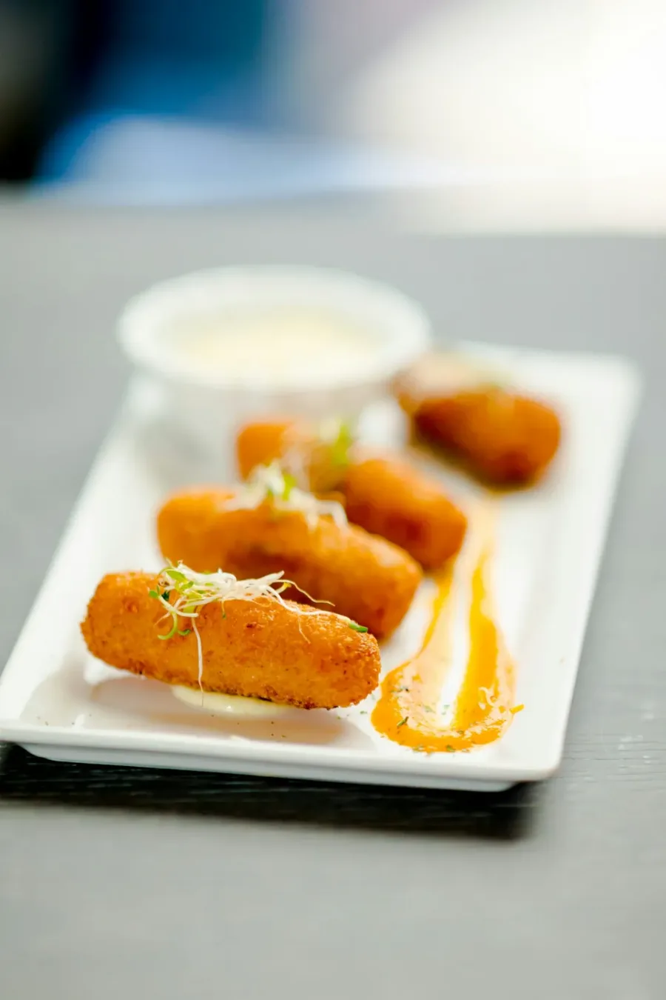
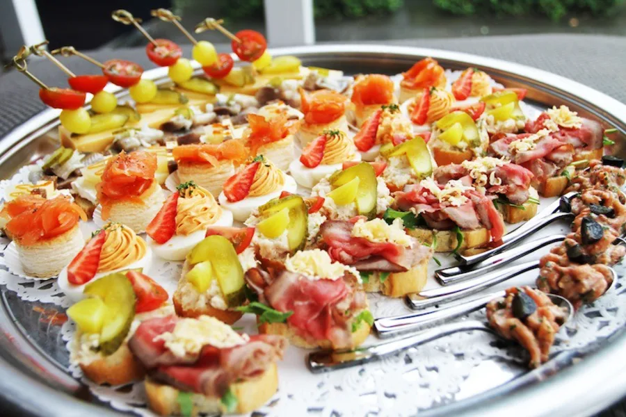

Koud en warm buffet
20,95 p.p.
Huzaren- en zalmsalade, verse fruitsalade, stokbrood, kruidenboter, vis- en vleesschotel, gehaktballetjes in zoetzure saus en saté.
Vanaf 25 personen
al ruim 60 jaar
Lunchroom & catering · Haarlem
Een lekker belegd broodje, een handgemaakt kroketje, saté of spareribs: bij ons kunt u lunchen of ’s avonds een hapje eten. En heeft u wat te vieren, dan maken wij de salades, schotels en buffetten.
Amsterdamstraat 19 · di t/m za vanaf 08:15

Al onze verse, zelfgemaakte producten kunt u afhalen, of gezellig in ons zitgedeelte opeten.
Kroketten, bamiballen en bittergarnituur maken we zelf, van ragout tot paneerlaag.
Buffetten, schotels en borrelhapjes voor particulieren en bedrijven, naar wens met koks en personeel.
De ragout, de bami en de bittergarnituur maken we zelf, in onze eigen keuken. Zo gaat dat.
Met de salades, schotels en buffetten van Fons Hof is het altijd feest! Onze buffetten zijn uw visitekaartje, naar wens met koks, drank en serverend personeel. Voor particulieren en bedrijven.
Benieuwd naar de mogelijkheden, of heeft u eigen ideeën voor een buffet? Bel 023 535 50 39.

20,95 p.p.
Huzaren- en zalmsalade, verse fruitsalade, stokbrood, kruidenboter, vis- en vleesschotel, gehaktballetjes in zoetzure saus en saté.
Vanaf 25 personen
69,95
Garnalen-, zalm-, paling-, carpaccio- en huzarenhapjes, gevulde eieren, brie- en kaashapjes.
29,50
Ons eigengemaakte bitterassortiment: bamiballetjes, gehakt-ui, bitterballen en eventueel kaassouffléetjes of een andere soort in overleg (ham-kaas, kalfs, groente, saté of nasi).
Vanaf 20 stuks
9,95 p.p.
Hamrolletjes met crème fraîche, carpaccio, in rookvlees gewikkelde eieren, hamrolletjes met augurk, meloen, aardbeien, druifjes, kiwi, ananas, brie, pompernikkel, kaashapjes en zuurgarnituur van Amsterdamse uien, paprika en augurk.
Vanaf 4 personen
10,95 p.p.
Zalm, garnalen, paling, zure haring, meloen, aardbeien, druifjes, kiwi, ananas, brie, pompernikkel, kaashapjes en zuurgarnituur van Amsterdamse uien, paprika en augurk.
Vanaf 4 personen
7,95 p.p.
Ei, tomaat, augurk, Amsterdamse uien, paprika en komkommer.
Vanaf 4 personen
9,95 p.p.
Hotpot met onze befaamde saté en Fons Hof-satésaus, compleet met stokbrood en kruidenboter.
Vanaf 8 personen
59,95
Hotpot met 40 ambachtelijke gehaktballetjes in zoetzure saus.
Broodjes, lunches of catering voor uw bedrijf of feestje? Bestellen gaat telefonisch; bezorgen gaat in overleg. Prijzen op aanvraag.
Bel 023 535 50 39Standaard: 0,4 liter melk, 2 kadetjes met beleg naar keuze, krentenbol en vers fruit.
Luxe: 0,4 liter melk, verse jus d’orange, 2 kadetjes naar keuze, stokbroodje naar keuze en vers fruit.
Blikje cola, cola light, sinas, Spa rood, Spa blauw. Verse jus d’orange, verse melk en verse karnemelk per 0,4 liter.
(023) 535 50 39 info@fonshof.nl
| Maandag | gesloten |
|---|---|
| Dinsdag | 08:15 – 00:00 |
| Woensdag | 08:15 – 00:00 |
| Donderdag | 08:15 – 00:00 |
| Vrijdag | 08:15 – 01:00 |
| Zaterdag | 08:15 – 01:00 |
| Zondag | 14:00 – 21:00 |